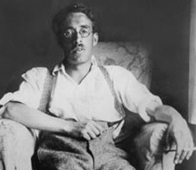

Biography |
Quotes |
Papers |
Misc.

Biography
When some people write, they tend to associate their ideas and narratives around certain situations they have experienced in their own lives. Frank O'Connor is certainly an author who does just that. Often, when a person writes, they enjoy relating their masterpieces to their own lives. It helps to shape their characters and it grasps a better outlook on the theme of the story. "My Oedipus Complex" was definitely a story in which Frank O'Connor used his own memories and experiences to shape the young character, Larry. O'Connor's background can strongly be associated with the theme of this particular tale. Although the story is fictitious, it resembles O'Connor's life in such a way, that it could almost represent one of his own journal entries as he reflects on himself being a young boy.
Frank O'Connor was born in Cork, Ireland in 1903 named as Michael O'Donovan. O'Connor was born into a poor family and remained an only child. His mother Minnie, helped the household by working as a maid (Wohlgelernter 2) while his father pushed himself into debt by overexceeding his credit. His father, Michael, was a cruel drunk who forced Minnie to sell her belongings for drinking money. O'Connor's father never liked the idea that his son would rather read a book than wrestle with the boys. Therefore, his father outwardly called him a sissy and told him he was weak (Tomory 16). Because of this degradation, O'Connor, as a young boy, would often seek refuge from his understanding mother. O'Connor always idolized his mother and he even admits that he was "mommy's boy" (Wohlgelernter 3). Although O'Connor could find shelter under his mother's wing, she would never tolerate hate-filled remarks that he made about his father (Tomory 17). On the other hand, he always resented his father and hated him for what he did to his mother. Throughout his life, his relationship was a constant battle with his father. It is natural in the Irish culture for a boy to feel a strong relationship with his mother. However, it is wondered if it is this special attachment that caused O'Connor's first marriage to fail. It seems that their close bond seemed to hinder O'Connor's sexual relationships as a teenager (Tomory 17).
O'Connor knew that the only thing to get him out of his horrifying family life was to become educated. He was always a bright boy, who loved people and he even managed to teach himself French and German. However, O'Connor had always stayed true to his native homeland, Ireland, because he thought there was much in his country to be proud of. As a member of the Irish Republican Army, O'Connor felt he represented his country in a justifiable way (Matthews 11). Although O'Connor lived in the United States, until five short years before his death, he could never sever his ties to his native homeland. After suffering a stroke while teaching at Stanford in 1961, O'Connor moved back to Dublin where he died in 1966 (Tomory).
Writing was always a passion for O'Connor. He still worked as the typical businessman, but he was always trying his hand at his wonderful gift of composition. His writing was a hobby, but it almost became a second job to him. In order to keep anonymity from his employers, he picked up the pseudonym of Frank O'Connor. O'Connor, being his mother's maiden name, seemed much more appropriate to him because he loved his mother so much. Rarely was he known as Michael O'Donovan, therefore, as a writer, he became known as Frank O'Connor (Wohlgelernter 3). O'Connor's talent cranked out 150 short stories, novels, plays, poetry, and two autobiographies before his death (Tomory 29).
At least 70 of O'Connor's short stories related to Irish family life and a majority of them related to his own life and experiences. "My Oedipus Complex" was one of those stories.
One cannot escape the conclusion that, though casting his protagonist as a little fellow, O'Connor is here aiming his satiric humor not only at the Oedipal relations which make every chap, falling in love with an attractive mother, want to murder his father, but also at the whole tragic condition of Irish life which finds boys, from their early adolescence, severely tied to their mothers' love (Wohlgelernter 69).
When writing this story, O'Connor definitely had in mind, his relationship with his mother and the special attachment he felt towards her because of his cultural background. This particular story is known to have more of his personal focus (Matthews 69). This could possibly be because the story was written as a first-person narrative. Larry's family also symbolized Frank's family in many ways. O'Connor even admits that he has written about his father in various disguises (Tomory 129).
An interesting aspect of O'Connor's family style writing involes the development of the character Larry Delaney. Larry is a recurring character in many of O'Connor's stories, "My Oedipus Complex" being one of them (Tomory 129). Larry Delaney plays the protagonist in many stories and a different childhood experience is depicted in each one. Although Larry's personality rarely changes, his development is still shaped by his experiences.
It is obvious to the readers of such creative tales, that O'Connor interwove many of his own experiences into his stories. I believe that O'Connor used his writing as an escape method from reality, or even as a vent of frustration. Because of his experiences, O'Connor produced many creative tales while leaving bits and pieces of himself tucked away between the lines.
Top